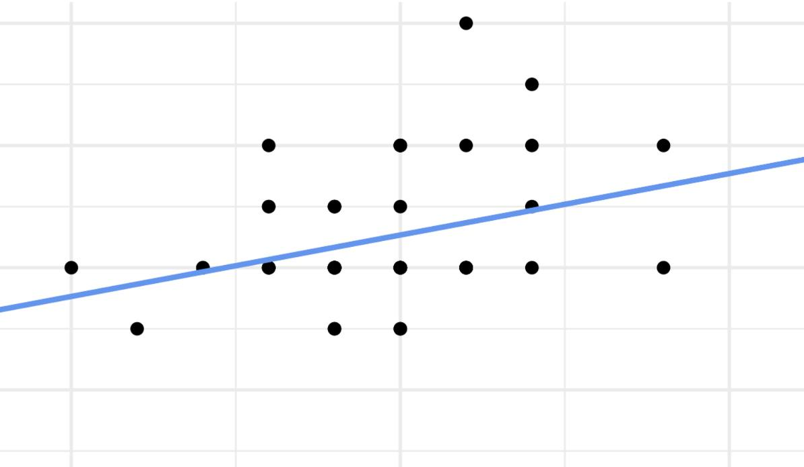
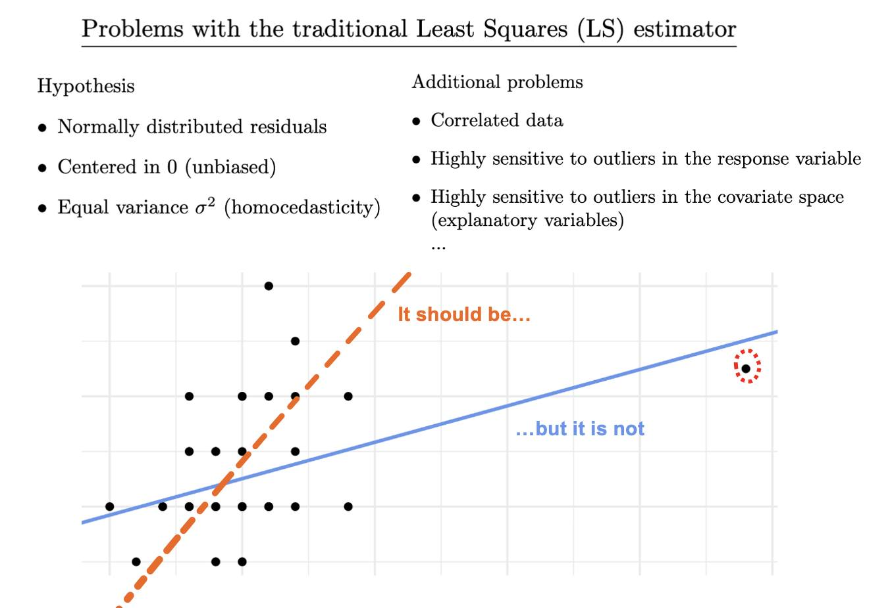
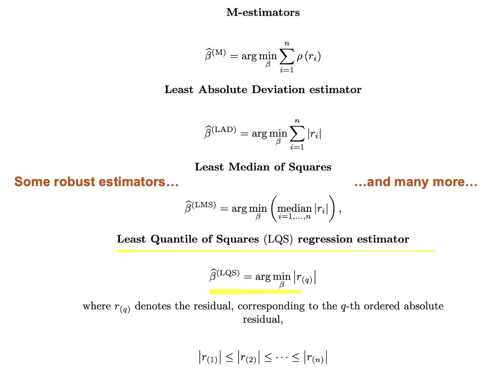
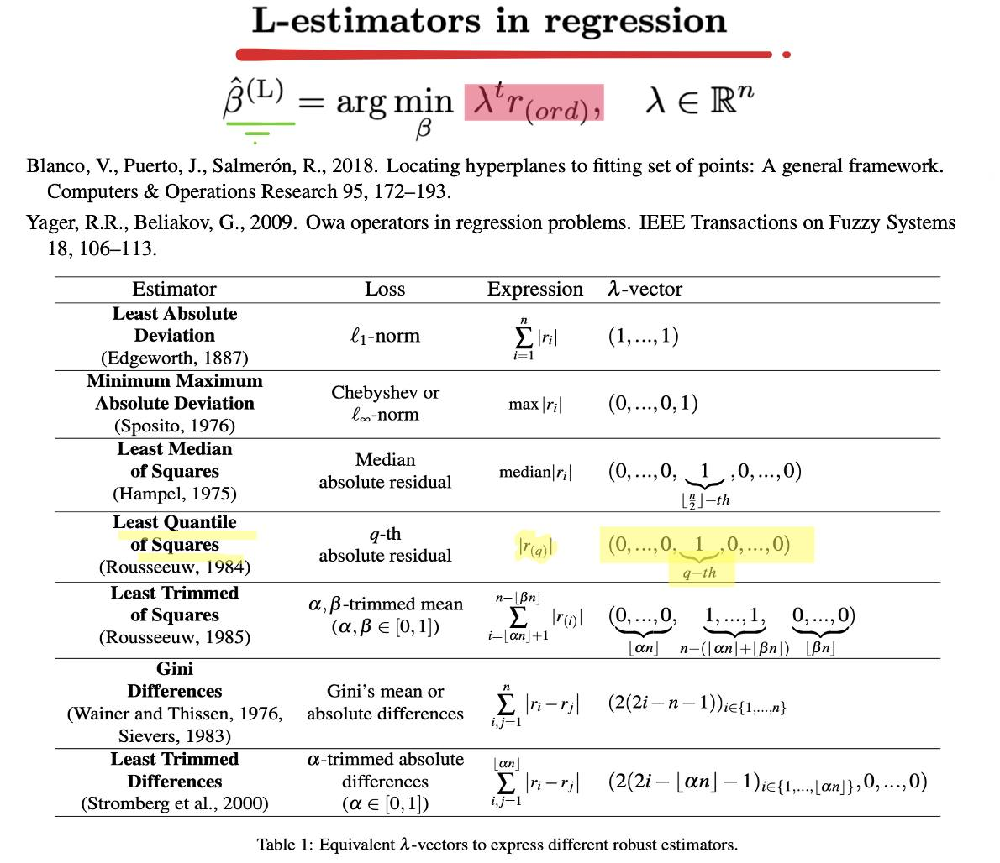
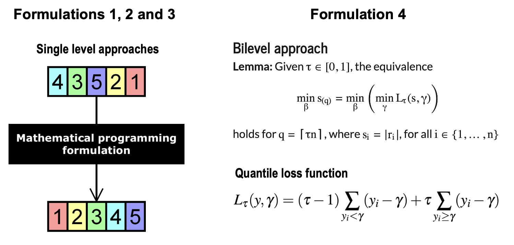

“We prove by logic, but we discover by intuition.” — Henri Poincaré
Our article “A fresh view on Least Quantile of Squares Regression based on new optimization approaches”, coauthored by Justo Puerto and Alberto Torrejón, has just been published in Expert Systems With Applications.
But… what is this paper really about?

You’re probably familiar with the image of a scatter plot and a line running through it, right?
Exactly! This work revisits the well-known linear regression model.
And while it might seem like everything has already been said about it… that’s not quite true.
The estimator most people know is Least Squares (LS) — it’s simple, easy to compute, and widely used. But it’s not flawless.

That’s why researchers have proposed alternatives: either by making LS more robust or by designing new estimators with better statistical properties or fewer theoretical assumptions. (Some examples are in the images below.)

In fact, you can generalize many of these estimators by means of an ordered approach known as Ordered Linear Regression:

One of the most powerful alternatives is called Least Quantile of Squares (LQS).
But here’s the catch: the more statistically precise the estimator, the harder it becomes to compute.
💡 That’s where we come in
In our paper, we expand the range of models capable of solving the LQS regression optimally. We introduce three mathematical programming formulations based on sorting techniques, and a fourth model based on bilevel optimization.

🎯 Spoiler alert from our next paper:
Did you know that simply sorting residuals can help generalize many families of estimators? These are known as L-estimators, and they’re incredibly useful. But — and here’s the challenge — sorting optimally is no easy task.
🔗 Want to know more? 👉 Upcoming paper teaser
That’s all… for now. More to come!
>> Home